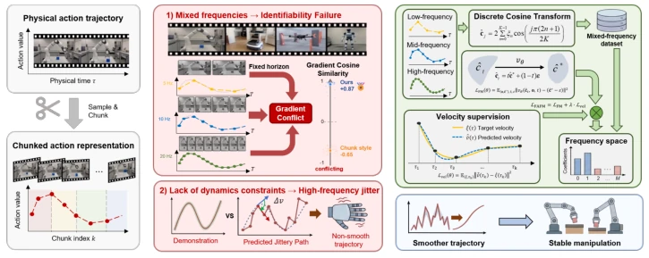
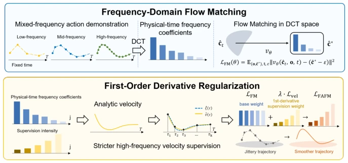
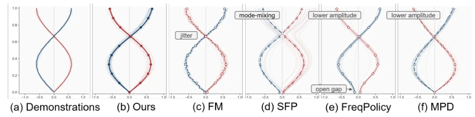
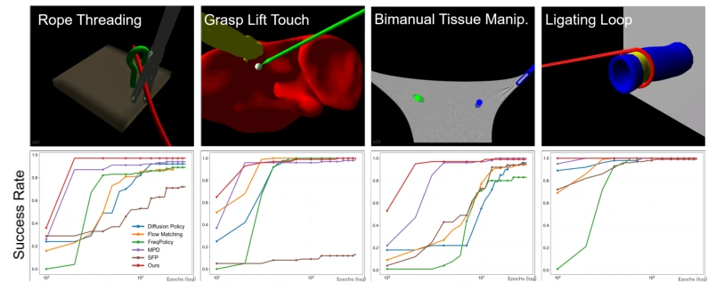
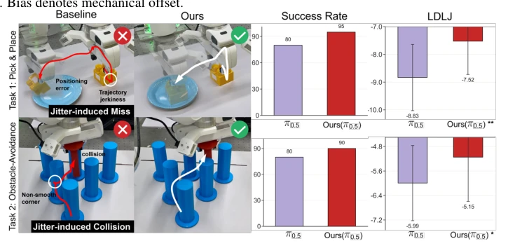

This paper adds a 'frequency filter' to Flow Matching. The authors find that when existing methods use discrete action chunks to process multi-frequency data, gradients conflict, causing action jitter. FAFM projects actions into the frequency domain for matching, then reconstructs using cosine bases, and additionally adds a regularization term for velocity. The results are indeed stable, working on LapGym and LIBERO, and the real Franka robot also performed without failure. However, the authors admit it fails when encountering high-frequency pulse actions, as DCT is good at smoothing signals and might inadvertently smooth out necessary 'hard brakes'. Overall, it is a simple and effective engineering optimization, but do not expect it to solve all dynamics problems, especially scenarios requiring rapid start-stop. This conversion of perspective to the frequency domain actually transforms a discrete optimization problem into a continuous function fitting problem; the idea is clear but implementation is simple, worth learning from.
Existing robot policies (such as π0 [3], Diffusion Policy [20]) typically predict discrete action chunks. However, in datasets like Open X-Embodiment [10], control frequencies vary significantly (3Hz to 50Hz). Discrete indices cause the same physical trajectory to correspond to different targets under different frequencies, triggering gradient conflicts (Proposition 1). During inference, adjacent time steps are evaluated independently, ignoring temporal coupling, producing high-frequency jitter, affecting the stability of soft manipulation (such as pouring water, surgery). Existing methods such as SFP [46] or FreqPolicy [45] fail to thoroughly solve frequency domain consistency issues or mode leakage. FAFM aims to solve action continuity and consistency under heterogeneous frequency training. Through physical time anchoring, this method avoids ambiguity brought by step indices, providing a new path for multi-source data fusion.

Figure 1: Introduction overview. Action chunk discretization causes Identifiability Failure and high- frequency jitter, which FAFM resolves via frequency-domain flow matching and velocity supervision.
The overall process transforms discrete action sequences into frequency domain coefficients via DCT, performs Flow Matching in coefficient space, and finally reconstructs continuous trajectories via cosine basis expansion. There are two core innovations: 1. Frequency domain representation: Using physical time-anchored DCT coefficients to replace step indices, eliminating recognition failures caused by heterogeneous frequencies, supporting execution at arbitrary resolutions. 2. Velocity regularization: Directly supervising Flow Matching on the first-order time derivative of actions, corresponding to Sobolev-type constraints (H1 norm), suppressing high-frequency errors, and forcing action smoothness. The loss function comprises position matching loss and acceleration loss, requiring no extra network parameters, ready to plug and play. Theoretically, this method is weighted H1 projection error, high-frequency errors are quadratically penalized, accelerating convergence and enhancing robustness. Specifically, DCT coefficients serve as basis function weights, making actions analytically differentiable. The velocity supervision term L_vel and position supervision term L_fm are combined to form L_FAFM. This design avoids noise brought by finite differences, ensuring actions are continuously differentiable in physical time.

Figure 2: Overview of FAFM. Demonstration trajectories are mapped to DCT coefficients anchored to physical time, flow matching is performed in coefficient space, and analytic temporal-derivative supervision regularizes the continuous action for smooth execution.
Evaluated on synthetic bimodal, obstacle avoidance, LapGym surgery, and LIBERO VLA benchmarks, as well as on the Franka real robot. Comparison baselines include DP [20], FM [27], SFP [46], etc. Metrics focus on success rate (SR) and motion smoothness (LDLJ). FAFM maintains 92% success rate under mixed frequency input (baseline π0 drops to 0%), LapGym converges faster, real robot obstacle avoidance success rate improves by 10%. Ablation experiments prove DCT transformation and velocity supervision are both critical. However, performance is limited on high-frequency pulse tasks. Furthermore, under mechanical bias, FAFM demonstrates stronger robustness, proving the invariance of frequency domain representation to constant offsets.

Figure 3: Synthetic toy bi-modal trajectory experiment. FAFM uniquely capture the multimodal modes and yields smooth trajectory.

Figure 5: (a) Overview of surgical manipulation tasks in LapGym. (b) Success rate on LapGym tasks as training proceeds. Our FAFM converge to the best result earlier than baselines.

Figure 10: Real-world deployment with the π0.5 backbone. Our FAFM achieves higher success rate by improved motion smoothness (LDLJ), which avoids jitter-induced miss and collisions. For LDLJ, paired samples t-test shows p < 0.001(∗∗) for Task 1, p < 0.05 (∗) for Task 2.